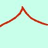
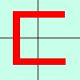
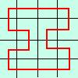
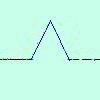
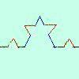
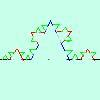

Relazioni fra continuita' e derivabilita'
C'e' da dire subito che
una funzione continua non e' sempre derivabile,
infatti se ho un punto con un angolo (punto angoloso) non ho la derivata perche' la derivata
destra e' diversa dalla derivata sinistra, inoltre posso pensare curve
che non hanno nessun punto derivabile: la curva di Peano, la curva di
von Kock.
curva di Peano


Per costruire la curva di Peano su un quadrato dividilo in 4 parti e considera i
centri dei sottoquadrati, congiungili con dei segmenti (prima figura)
dividi poi ognuno dei sottoquadrati in 4 sotto-sottoquadrati e congiungili
come vedi nella seconda figura. Continuando il procedimento riempirai tutto il
quadrato con una curva che non sara' derivabile in nessun punto
curva di von Kock



prendi un segmento, dividilo in tre parti uguali e su quella in mezzo al
posto del segmento prendi due lati di un triangolo equilatero, ripeti il
procedimento su ognuno dei 4 segmenti cosi' ottenuti, Procedendo all'
infinito
la curva che si ottiene non ha nessun punto derivabile
Dimostriamo, a completamento della pagina, che se una funzione e'
derivabile allora e' anche continua
Ho per ipotesi che esiste la derivata finita f '(x0)
devo dimostrare che allora la funzione e' continua (tesi)
La definizione di continuita' e' che
limx->x0
f(x) = f(x0)
od anche
limh->0
f(x0+h) = f(x0)
cioe'
limh->0
f(x0+h) - f(x0) = 0
Dimostrazione
Parto dall'espressione
limh->0
f(x0+h) - f(x0)
devo dimostrare che vale zero
Moltiplico sopra e sotto per h
f(x0+h) - f(x0)
limh->0 --------------- · h =
h
la prima parte del prodotto e' la derivata
= f '(x0) ·limh->0 h = f '(x0) · 0 = 0
come volevamo dimostrare
|